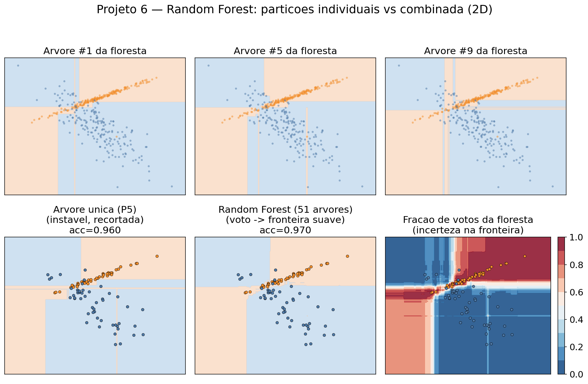
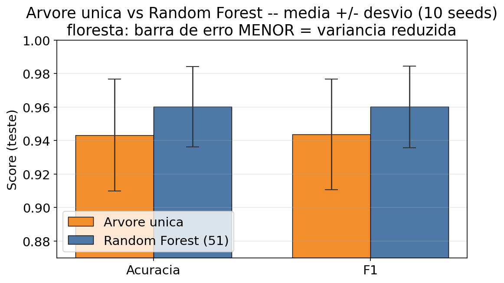

Random Forest manual (sem sklearn.ensemble): bagging + subamostragem de features por split + voto de maioria, sobre a árvore CART do Projeto 5. Fecha o arco do P5: árvore não-podada tem alta variância — o RF é a cura clássica.
acurácia RF, 10 seeds (árvore única: 0,943)
desvio RF, 1,4× menor (árvore: ±0,034)
pareado: floresta−árvore = +0,017
Bootstrap: amostra n itens
do treino COM reposicao
max_features: sorteia k
features candidatas
por split (aqui k=1 de 2)Cada árvore vê dados e splits diferentes → árvores diversas.
votos = [t.predict(X) para
t in floresta]
pred = media(votos) >= 0.551 árvores (ímpar, sem empate). O voto cancela ruído individual.


| Métrica | Árvore única | Random Forest |
|---|---|---|
| Accuracy | 0,943 ± 0,034 | 0,960 ± 0,024 |
10 seeds, N=2000, 51 árvores. Pareado: +0,017, t=4,00 — vitória consistente.
max_features/profundidade e comparar com sklearn.